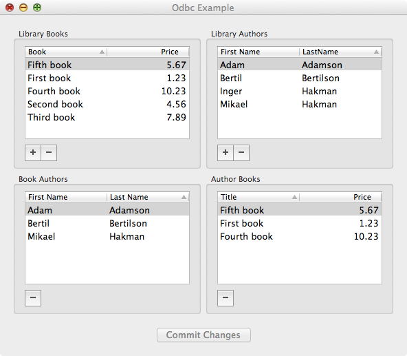
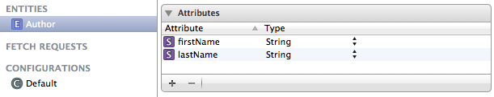
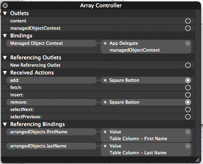

Odbc Reference
Odbc framework users guide
Odbc framework is Cocoa framework providing access to ODBC databases. It works on top of iODBC framework which is a low level C-oriented framework of ODBC routines that follow ODBC specification. The framework includes also an experimental Cocoa Core Data Persistent Store for Odbc. It hass been tested with IBM DB2, Mimer SQL, MySQL, Oracle and PostgreSQL.
ODBC framework consists of a number of classes. Currently only OdbcConnection, OdbcStatement, and OdbcException are used in non-Core Data applications. OdbcStore class and OdbcAppDelegate class are used in Core Data applications. The rest is for internal framework use.
In order to use Odbc framework you don’t need to know ODBC specification. You do need to know some basics of SQL, relational databases and of course Objective-C.
The documentation consists of:
- This user guide document
- Odbc framework overview page
- Class hierarchy page
- Invidual pages for each class
This repository contains XCode project with 4 targets:
- Odbc - builds the framework itself
- OdbcDocumentation - generates the documentation
- OdbcExample - builds Cocoa Core Data application using Odbc
- OdbcTests - performs unit tests of the framework
- TestConnect - tests connection to an ODBC data source
Example console application
The following is a simple Cocoa console application that uses Odbc framework.
// main.m
#import <Cocoa/Cocoa.h>
#import <Odbc/Odbc.h>
int main (int argc, char * argv []) {
OdbcConnection * connection = [OdbcConnection new];
[connection connect: @"testdb" username: @"sysadm" password: @"secret"];
OdbcStatement * stmt = [connection newStatment];
[stmt execDirect: @"select * from book order by title"];
while ([stmt fetch]) {
long bookId = [stmt getLongByName: @"bookId"];
NSString * title = [stmt getStringByName: @"title"];
double price = [stmt getDoubleByName: @"price"];
NSLog (@"%ld %@ %f",bookId,title,price);
}
[stmt closeCursor];
return 0;
}
In this application we first create an OdbcConnection and then use it to connect to ODBC data source named ‘testdb’ with username ‘sysadm’ and passwaord ‘secret’. Then we create a new OdbcStatement. We use this statement to execute SQl query ‘select * from book order by title’. After that we go into a loop fetching a new row each time aroud. We get ‘bookId’, ‘title’ and ‘price’. Then we write the data to the console. When the loop terminates we close the statement.
Prerequisites
First and foremost you need XCode installed on your Mac. If you don’t have it go to AppStore download and install it. It’s free of charge. Test your installation by writting and running a small application.
Next you need a database manager, either standalone on your Mac, or on accessible network server. If you don’t have you need to download and install it. See Notes at the end of this document for notes about various database managers that Odbc framework has been tested with.
Our developer team uses primarily Mimer SQL and MySQL. Mimer SQL is first class, fully fleged, commercial grade relational database management system that is free of charge for development purposes.
Then again, any of the tested database managers will work ok.
Next comes iODBC framework (Odbc framework builds upon iODBC framework). If you don’t have it go to iOdbc site, download and install it. Among other things it will install ‘iOdbc Administrator’ application. You use it in a 2-step process. First you register your ODBC driver - this is done under ‘ODBC Driver’ tab. Then you register your database under either ‘User DSN’ or ‘System DSN’ tab.
Test overall installation, perhaps by running the application above.
Cocoa Core Data example
The example uses the following Core Data model:

The model consists of 2 entities and 2 relationships. Entity Book has attributes ‘price’ and ‘title’. Entity Author has attributes ‘firstName’ and ‘lastName’. The double-headed arrow between the entities represents the 2 relationships. One relationship from entity Book to entity Author is called ‘bookAuthors’ (name not shown in picture above) and the second relationship from entity Author to entity Book is called ‘authorBooks’ (name not shown). Both are one-to-many relationsips. In plain words, each book can be written by a number of authors and each author may have written a number of books.
The nice picture above was generated by XCode Core Data model editor based on the following information entered by application developer:


When the example application is run for the first time against a particular ODBC data source it will generate the following schema in the database:

There are 4 tables in the schema above. Table ‘CoreDataEntity’ is needed is every ODBC Core Data application. It keeps track of primary keys used in the other tables. For each Core Data entity a table is generated containing column ‘id’ as primary key. The other columns correspond to entity attributes. Example application uses ‘Author’ and ‘Book’. Each pair of entity relationships results in one table. Example application uses ‘authorBooks’ and ‘bookAuthors’ pair of relationships. This results in table ‘bookAuthors’ with columns ‘Book’ and ‘Author’. This table has also foreign keys constraints to both ‘Autor’ and ‘Book’ tables.
The name of ODBC data source, username, and password to use are specified by an URL. You find the following method in ‘AppDelegate’ class:
- (NSURL *) persistentStoreUrl {
return [NSURL URLWithString : @"odbc:///testdb?username=sysadm&password=secret"];
}
This specifies that ODBC data source ‘testdb’, username ‘sysadm’ and password ‘secret’ should be used. A lot of code in ‘AppDelegate’ has been generated by XCode when you specify ‘Core Data’ for a new project. This code has been included in class OdbcAppDelegate so that you only need to inherit your AppDelegate from that. The other classes in the application has been written by me in order to control the UI (mostly drag and drop). Most of work has been done in XCode Interface Builder.
Example application displays the following UI to the user:

Table ‘Librart Books’ displays books in the library. You add/remove books by coresponding +/- buttons under the table. Table ‘Library Authors’ displays authors in the library. You add/remove authors by corresponding +/- buttons under the table. Table ‘Book Authors’ displays authors of the selected book. You add book author by dragging an author from ‘Library Authors" to 'Book Authors’. Table ‘Author Books’ displays books for the selected author. You can drag a book from ‘Library Books’ into ‘Author Books’ to add the book to the selected author. When running the application for the first time against a particular data source the tables will be empty.
Unit tests
Unit tests expect data source ‘testdb", username 'root’ and no password. You can change this in method connect in OdbcTests class. Change the line reading:
[self->connection connect : @"testdb" user : @"sysadem" password : @"secret";
The tests will create table named ‘testtab’ in the data source. This table will be removed after the tests are done.
Tasks to be performed
In order to build, test and run the software you can follow the list below:
- Download and install XCode from Apple AppStore. It is free of charge.
- Download and install iOdbc framework from http://www.iodbc.org . It is free of charge.
- Dowload and install Git from http://git-scm.com/ . It is free of charge.
- Clone this repository into an empty directory. This will result in an XCode project directory.
- Now you should be able to open the project in XCode and build the targets.
- Dowload a database manager with ODBC driver and client tools.
- Use client tools to create a database.
- Use the ‘iODBC Administrator’ to register your ODBC connector and to create an ODBC data source.
- Now you shoud be able to run the unit tests and example application.
Creating new XCode project using Persistent Store for ODBC
In this section I will guide you in creating a new XCode project using Persistent Store for ODBC. The section contains the following topics:
- Creating new project.
- Adding required frameworks.
- Modifying AppDelegate.
- Creating new data model.
- Adding NSArrayController.
- Adding NSTableView.
- Adding buttons.
Creating new project
Create new XCode project of type ‘Application/Cocoa Application’. Uncheck ‘Use Core Data’ checkbox. If you check it then it will generate a lot of code in your AppDelegate. This code is already contained in Odbc.framework and therefore we do not want to generate it.
Build and run your new application. It should build without errors and warnings. It should run without problems. Quit the application.
Adding required frameworks
Copy Odbc.framework from Odbc project directory to either /System/Library/Frameworks or to your project directory. Copying to /System/library/Frameworks makes things a lttle easier and you will have the framework in right place for other projects.
Select ‘Frameworks’ in your project Project Navigator. Add file Odbc.framework . Uncheck ‘Copy items to destination…’ checkbox. You find the files in either your project directory or in ‘/System/Library/frameworks/ depending where you copied them.
Select ‘Frameworks’ in your project Project Navigator. Add file ‘CoreData.framework’ from /System/Library/Frameworks. Uncheck ‘Copy items to destination…’.
If you copied Odbc.framework to your project directory then you need to modify your project settings. If you copied the framework to /System/Library/Frameworks/ then you don’t need to do the following. Select your project in Project Navigator. You should see the Project Editor now. Select your project in Project Editor. Select ‘Build Settings’ tab. Find ‘Run Search Path’ in the build settings area. Select ‘Run Search Path", click on the settings row and enter $(PROJECT_DIR).
Build and run your application. There shouldn’t be any problems. Quit your application.
Modifying AppDelegate
Modify your AppDelegate.h. Add the following line to imports directives:
#import <Odbc/Odbc.h>
Modify the @interface statement to read:
@interface AppDelegate : OdbcAppDelegate <NSApplicationDelegate>
Your AppDelegate.h should now look like the following:
#import <Cocoa/Cocoa.h>
#import <Odbc/Odbc.h>
@interface AppDelegate : OdbcAppDelegate <NSApplicationDelegate>
@property (assign) IBOutlet NSWindow * window;
@end
Modify your AppDelegate.m. Add the following method:
- (NSURL *) persistentStoreUrl {
return [NSURL URLWithString : @"odbc:///testdb?username=sysadm&password=secret"];
}
In the above the string ‘testdb’ is name of an ODBC data source to use. You should replace it with your own data source name (unless you have data source ‘testdb’. The string ‘username=sysadm’ specifies database username. Replace ‘root’ by your username. The string ‘password=secret’ specifies password to use. Replace it with your password. Your AppDelegate.m should now look like the followig:
#import "AppDelegate.h"
@implementation AppDelegate
- (void) applicationDidFinishLaunching:(NSNotification *) notification {
// Insert code here to initialize your application
}
- (NSURL *) persistentStoreUrl {
return [NSURL URLWithString : @"odbc:///testdb?username=sysadm&password=secret"];
}
@end
Build and run your application. There shouldn’t be any problems. Quit the application.
Creating new data model
In this section we will create a data model for your application.
Select your application in the Project Navigator, right or control click on it. Select ‘New File…’ on the popup menu. Select ‘Core Data’/‘Data Model’ on the dialog. Press ‘Next’ button. On the ‘Save As’ dialog specify name of the model. Currently the name must be the same as your application. Press ‘Create’ button.
Build and run your application. It shouldn’t and problems. Quit the application.
Now your are set up and can continue to build your application as any other Core Data application. However if you don’t know Core Data very well then you may follow the guide below. We will create an application that does something real. The application will display a list of authors from the data base and let the user add, modify, and delete authors.
Select your model file in the Project Navigator. You should see Model Editor now. Press ‘Add Entity’ button. Specifiy entity name ‘Author’. Add attribute ‘firstName’ of type string, non optional. Add attribute ‘lastName’ of type String, non aptional.
Now we have a simple data model with entity ‘Author’ with 2 attributes ‘firstName’ and ‘lastName’. In model editor this looks like the following:

Build and run your application. There shouldn’t be any problems. Quit the application.
Adding NSArrayController
Now we will continue the work in XCode Interface Builder. Select the ‘MainMenu.xib’ file in the Project Navigator. You should see the Interface Builer UI.
Add an Array Controller to the list of objects contained within the xib file. Select the new ‘Array Controller’ object. In the Inspector pane select ‘Attributes Inspector’. Specify ‘Entity Name’ in the ‘Mode’ field. Specify ‘Author’ in the ‘Entity Name’ field. Check the ‘Prepare Content’ checkbox. The Attributes Inspector should look as following:

Select Bindings Inspector in the Inspector pane. Find ‘Parameters’ heading. Find ‘Managed Object Context’ and expand it. Check the ‘Bind to’ checkbox and choose ‘App Delegate’ in the drop down box. Specify ‘managedObjectContext’ in ‘Model Key Path’ field. The Bindings Inspector should look as following:

Build and run your application. There shouldn’t be any problems. Quit the application.
Adding NSTableView
Still in the Interface Builder add a Table View to your view.
Specify the following for the first table column. In Attributes Inspector set Title to ‘First Name’. In Bindings Inspector heading Value check ‘Bind to’ check box, select ‘Array Controller’ in the drop down list, Controller Key should be ‘arrangedObjects’ and Model Key Path set to ‘firstName’. This is depicted below:

Specify following for the second table column. In Attributes Inspector set Title to ‘Last Name’. In Bindings Inspector heading Value check ‘Bind to’ check box, select ‘Array Controller’ in the drop down list, Controller Key should be ‘arrangedObjects’ and Model Key Path set to ‘lastName’. This is depicted below:

Build and run your application. There shouldn’t be any problems. It should present a nice table with 2 columns named ‘First Name’ and ‘Last Name’. It still lacks means to enter the data. Quit the application.
Adding buttons
Still in Interface Builder.
Add Square Button to the view. In Attributes Inspector find ‘Image’ drop down list. Select ‘NSAddTemplate’. Control-click (or use right mouse button) on the button in the view and drag to ‘Array Controller’ object. Drop there and select ‘add:’ on the popup menu.
Add another Square Button to the view. In Attributes Inspector find ‘Image’ drop down list. Select ‘NSRemoveTemplate’. Control-click (or use right mouse button) on the button in the view and drag to ‘Array Controller’ object. Drop there and select ‘remove:’ on the popup menu.
Control-click (or right-click) on the Array Controller. You should obtain the following popup:

Build and run the application. It should display a window like following:

When you run your application for the first time, the table will be empty. You can add an author using + button. You can remove an author using - button. You can modify an author by double-clicking on it. Your chages will automatically be saved to the database when you quit the application.
Notes
The iODBC Administrator
The ‘Test’ button in iODBC Administrator does not allways works. Sometimes you get errors and yet everything is alright. Use the TestConnectApp provided in this software.
The iODBC Administrator writes sometimes wrong path names to odbc.ini and odbcinst.ini in /Library/ODBC directory. Use TextEdit to read the files and correct any mistakes.
IBM DB2
The installation of DB2 on OS X is not what you expect on a Mac. It is more Unix oriented, no GUI, you work in a terminal window. It works if you follow instructions on https://www.ibm.com/developerworks/community/forums/html/topic?id=77777777-0000-0000-0000-000014927797
After installation you create a database using DB2 command.
ODBC driver for DB2 and OS X is available from OpenLink.
Mimer
Mimer SQL can be dowloaded from http://developer.mimer.com/downloads/index.htm.
ODBC driver and client tools are included in Mimer SQL for OS X.
After installation you should create a databank using Mimer Batch SQL utility.
MySQL
Download and install MySQL, MySQLWorkbench and MySQL ODBC driver.
After installation you create a database using SQLWorkbench.
ODBC driver is available from MySQL.
Oracle
Currently, Oracle is not avaiable on OS X. However, there is an Oracle ODBC driver for OS X available from OpenLink. You can use it and run with Oracle running on a server.
ProgreSQL
The official ODBC driver for PostgreSQL can be downloaded and installed by the Application Stack Builder tool provided in the main PostgreSQL installation. This driver needs a file named ‘libltdl.7.dylib’ in /usr/local/lib directory. If you, like me, doesn’t have it then yo need to install it by the following procedure.
Install command named ‘brew’ from http://brew.sh. Look at the end of the page for command needed to install it. Run the command in a terminal window. Then still in terminal window perform commands:
brew install libtool --universal
brew link libtool
Now, the required file should be in place.
Also, ProgreSQL needs a special option in odbc.ini file in /Library/ODBC directory. The following option should be added to odbc.ini for each database using ProgreSQL:
UseServerSidePrepare = 1
You can use iOdbc Administrator to enter this option or you can use TextEdit to manually edit the odbc.ini file.
ODBC driver for PostgeSQL and OS X is available from PostgreSQL.